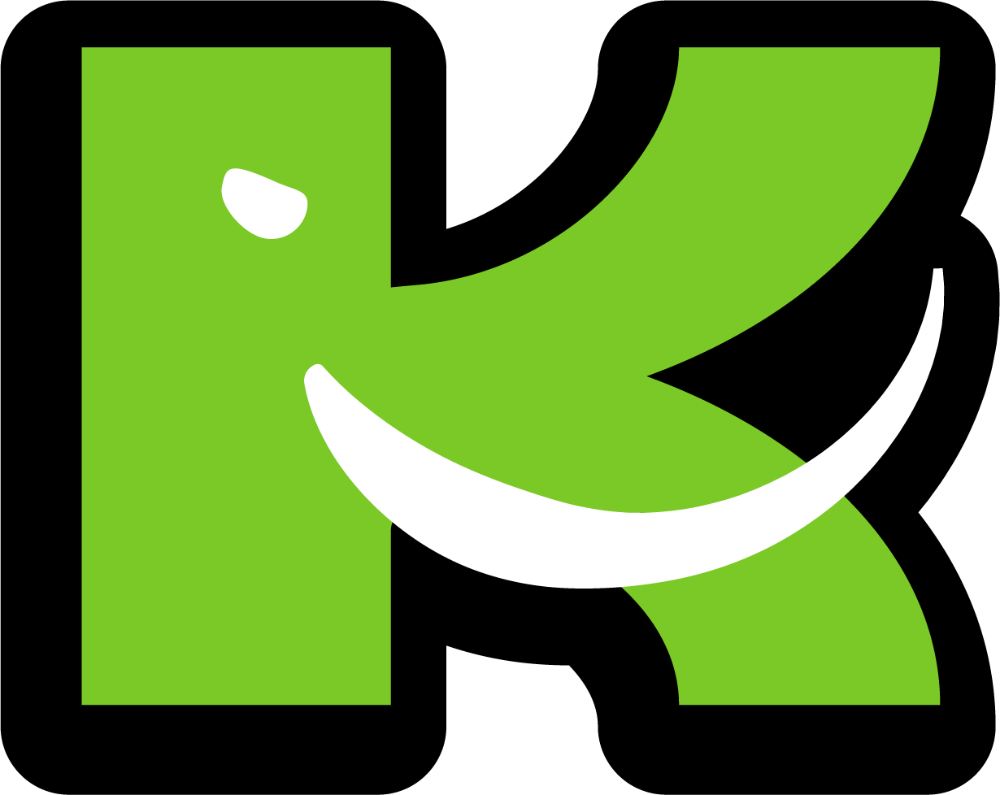

Playlists
Listen to some of our favorite tracks culminated into different themes of playlists. From "Transitions Tuesday", "TBT", and "Sequence Sunday" to "French Friday" and "Wine Wednesday", you're sure to find something that suits you. Happy listening!

Stay tuned for in-line playlist experience!
KOLOSAL 2022™